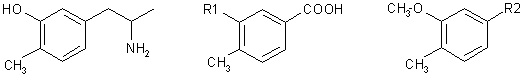

HTML by Mellow & Rhodium
p-Toluic acid was converted in seven steps to (3-methoxy-4-methylphenyl)acetonitrile (VIII) which underwent Claisen's reaction with ethyl acetate and subsequent acid hydrolysis to yield the phenylacetone derivative XI. Leuckart's reaction and alkaline hydrolysis of the product gave rise to 3-methoxy-4-methylamphetamine (XIII) which was demethylated with hydrobromic acid to the title compound I.
Carlsson and coworkers1,2 prepared the 3-hydroxy-4-methyl derivative of amphetamine I which, in histochemical and biochemical experiments on rats and mice, depresses with extraordinary intensity the levels of norepinephrine in central and peripheral neurones (brain and heart) by setting it free from its storage sites. At the same time, a sympathomimetic stimulation and a central excitation are observed. Compound I accelerates3 the oxidation of norepinephrine catalyzed by ceruloplasmin in experiments in vitro. The mentioned effects of I can be suppressed by prophylacetic application of antidepressants (protriptyline, desipramine)4; amphetamine and methamphetamine, on the other hand, potentiate the effects of I as to the washing out of brain norepinephrine5. Only higher doses release also brain dopamine1; this effect is potentiated by the lysergide model N,N-diethyl-1-methyl-1,2,3,6-tetrahydronicotinamide (THPC) as long as I is applied in combination with mezcaline6. For the reported studies, the pharmacokinetics of I in mouse brain and heart7 was studied and a micromethod for identification of the compound in central and peripheral neurones was developed8. I acts as antinociceptive toward painful stimuli in the rat9 and this effect is antagonized by neuroleptics (chlorpromazine, reserpine) as wed as by antidepressants (protriptyline) and potentiated by atropine. Lassen10 studied the mechanism of hypermotility brought about by I in rats and found11 this hypermotility to be antagonized by neuroleptics of the cataleptic type (chlorpromazine, haloperidol) and noncataleptic type (clozapine, thioridazine); he suggested to use the antagonizing of this hypermotility as a test for evaluating potential neuroleptics.
The mentioned paper11 stimulated our interest in I as our studies in the series of 10-piperazinodibenzo[b,f]thiepins include both highly cataleptic12 and noncataleptic13 neuroleptics. A pharmacological test that would embrace both types of neuroleptics would be an invaluable tool for the prediction of clinical properties of the studied compounds. For this reason we took up the synthesis of I. Ref.1,2 describe its preparation in two parallel ways which proceed from 3-methoxy-4-methylbenzaldehyde and from 3-benzyloxy-4-methylbenzaldehyde (obtained from the corresponding acids by Rosenmund's reaction) which react with nitroethane to yield the corresponding substituted nitrostyrenes. Reduction with lithium aluminium hydride yielded 1-(3-methoxy-4-methyl)-2-propylamine and 1-(3-benzyloxy-4-methyl)-2-propylamine; to obtain I, the first of these was demethylated with hydrobromic acid, the other was debenzylated by catalytic hydrogenation. We developed an alternative synthesis which, although somewhat longer as to the number of steps, is advantageous because it employs simple reactions and gives a high yield.
|  | ||||||||||||||||||||||||||||||||
| I |
|
|
||||||||||||||||||||||||||||||
The starting compound was p-toluic acid which was converted by conventional procedures via intermediates II-VI to 3-methoxy- 4-methyl- benzyl chloride (VII). p-Toluic acid was nitrated14 by a modified method15 to 4-methyl- 3-nitro- benzoic acid (II). For reduction of II to 3-amino-4-methylbenzoic acid14,16 (III) we used catalytic hydrogenation on Raney nickel. Transformation to 3-hydroxy-4-methyl-benzoic acid (IV) was done according to ref.17. Subsequent methylation was described18 by treatment with methyl iodide and potassium hydroxide at 140ºC when it was necessary in a separate step to hydrolyze the methyl ester formed. We carried it out in a single step with dimethyl sulfate in the presence of excess aqueous sodium hydroxide and thus obtained 3-methoxy-4-methyl benzoic acid (V). A similar procedure was used by El'tsov19 but he converted the product without isolation to the methyl ester which was then reduced with lithium aluminium hydride in ether to 3-methoxy-4-methylbenzyl alcohol (VI). We observed here that the same result is achieved by reduction of the free acid V. The above author19 described the conversion of alcohol VI to chloride VII with thionyl chloride in ether in merely a 37% yield. Our modification of this reaction in benzene produced chloride VII in a 75% yield.
Reaction of chloride VII with sodium cyanide in dimethylformamide yielded (3-methoxy-4-methylphenyl)acetonitrile (VIII) which underwent Claisen's reaction (method in20,21) with ethyl acetate to cyano ketone IX. While the 1H-NMR spectrum of the compound (in deuteriochloroform solution) is compatible with structure IX, the IR spectrum of a solid (in Nujol) indicates that we are dealing here with a stabilized enol-form X. Hydrolysis with a boiling mixture of hydrochloric and acetic acids resulted in (3-methoxy-4-methylphenyl)acetone (XI) which underwent Leuckart's reaction22 with formamide and formic acid to the formamido derivative XII. This was transformed by alkaline hydrolysis without characterization to 1-(3-methoxy-4-methylphenyl)-2-propylamine (XIII) prepared before by a different procedure1.
Patent applications2 also mention a method using Leuckart's reaction but do not characterize any of the intermediates XI-XIII. The final demethylation was done with hydrobromic acid1,2; the product was prepared in the form of hydrogen maleate and base I was further characterized by a study of spectra.
The melting points of analytical preparations were determined in Kofler's block and are not corrected; the samples were dried in vacuo at 0.5 Torr over P2O5 at room temperature or at 77ºC. The UV spectrum (in methanol) was recorded in a Unicam SP 8000 spectrophotometer, the IR spectra (in Nujol) were recorded in a Unicam SP 200G spectrophotometer and 1H-NMR spectra (in CD3SOCD3 unless stated otherwise) in a Tesla BC 487 (80 MHz) spectrometer. Homogeneity of the compounds was checked by thin-layer chromatography on silica gel (Silufol).
Raney nickel (10 g) was added to a warm solution of 121 g 4-methyl-3-nitrobenzoic acid15 (II, m.p. 185-190ºC) in 1 litre ethanol and the mixture was hydrogenated at normal pressure and with gentle heating. Theoretical consumption of hydrogen was reached in 5 h; it was filtered and the solution was evaporated. A total of 93.8 g (94%) crystalline product was obtained; m.p. 166.5-167.5ºC. Ref.16 reports for a product obtained by reduction of II with stannous chloride a m.p. of 164-165ºC.
Dimethyl sulfate (54.2 g) was added to a suspension of 26.9 g 3-hydroxy-4-methylbenzoic acid17 (IV, m.p. 206-210ºC) in 110 ml methanol, and 117 ml 30% NaOH was then added dropwise under stirring over a period of 40 min. The temperature of the mixture rose spontaneously to the boiling point and a clear solution was formed. It was refluxed for 4 h, methanol was evaporated at reduced pressure and the residue was diluted with water until the sodium salts formed dissolved. After filtration, the filtrate was acidified with 70 ml 5M-HCl, the precipitated product was cooled, filtered, washed with water and dried in air; 23.9 g (82%), m.p. 158-160ºC. Ref.18 reports a m.p. of 156ºC.
Suspension of 47.4 g V in 500 ml ether was added dropwise under stirring over a period of 30 min to a suspension of 21.5 g LiAlH4 in 250 ml ether. The mixture was refluxed for 2 h, cooled, decomposed by adding 75 ml water and 25 ml 5M-NaOH, stirred for a while and combined with 25 g K2CO3. After brief stirring, the solid was filtered and washed with ether. Treatment of the filtrate yielded 34.4 g (80%) product boiling at 96-102ºC/0.2-0.5 Torr. Ref.19 reports for a product obtained by reducing the methyl ester a b.p. of 107-110ºC/3 Torr.
A solution of 87.5 9 SOCl2 in 75 ml benzene was added dropwise over a period of 30 min to a solution of 53.4 g VI in 200 ml benzene. The mixture was stirred for 30 min at 50ºC and refluxed for 1.5 h. After evaporation of the volatile fractions the residue was dissolved in 200 ml benzene, the solution was filtered with charcoal and CaCl2 and the filtrate was distilled; 44.8 g (75%), b.p. 76-78ºC/0.5 Torr. Ref.19 reports for a product obtained in a similar reaction in ether a yield of merely 37% and a b.p. of 123ºC/17 Torr.
Sodium cyanide (19.9 g) was added under stirring to a solution of 35.2 g VII in 75 ml dimethylformamide. After cessation of the exothermic reaction the mixture was stirred for 4 h at room temperature. After standing overnight it was diluted with 300 ml water and extracted with chloroform. The extract was washed with water, dried with Na2SO4 and distilled: 30.3 g (91%), b.p. 106-108ºC/0.5 Torr. Analytical sample, b.p. 99ºC/0.1 Torr.
Compound VIII (12.6 g) was added to a warm solution of C2H5ONa (2.36 g Na and 35 ml ethanol) and then 14.5 g ethyl acetate was added under stirring over a period of 20 min at 70 to 75ºC. The mixture was refluxed under stirring for 2.5 h and left to stand overnight at room temperature. The precipitated substance was dissolved by adding 250 ml water, the pH of the solution was adjusted to 10-12 with 20% NaOH and the turbid solution was washed with ether. Acidification of the alkaline aqueous layer with 30 ml acetic acid (pH 4.5) released a product which was isolated by extraction with chloroform; 14.6 g (92%), m.p. 80-81ºC. An analytical sample was obtained by crystallization from a mixture of benzene and light petroleum, m.p. 83.5-84.5ºC.
IR spectrum: 815, 837, 844, 863 (2 adjacent and solitary Ar-H), 1042, 1259 (ArOCH3), 1139 (OH), 1504, 1572, 1609 (Ar), 1630 (C=C), 2220 (C=C-CN), 3010 (Ar), 3170 cm-1 (OH); The IR spectrum thus does not display the band of a keto group but contains bands of the hydroxyl group which suggests the enol form X. 1H-NMR spectrum (CDCl3): δ 7.12 and 6.82 (2 d, J = 8.0 Hz, 2 H, 5,6-H2), 6.75 (bs, 1 H, 2-H), 4.64 (s, 1 H, Ar-CH-CO), 3-80 (s, 3 H, OCH3), 2.20 and 2.18 (2 s, 6 H, Ar-CH3 and COCH3).
Hydrochloric acid (30 ml) was added to a solution of 8.5 g IX in 40 ml acetic acid and the mixture was refluxed for 6 h. After cooling, it was diluted with 500 ml water and extracted with chloroform. Processing of the extract yielded 4.9 g (67%) product boiling at 100-110ºC/1 Torr. The analytical sample boiled at 101ºC/1 Torr.
1H-NMR spectrum (CDCl3): δ 7.04 (d, J = 8.0 Hz , 1 H, 5-H), 6.66 (d, J = 8.0 Hz, 1 H, 6-H), 6.60 (s, 1 H, 2-H), 3.78 (s, 3 H, OCH3), 3.60 (s, 2 H, ArCH2CO), 2.15 (s, 3 H, ArCH3), 2.11 (s, 3 H, COCH3).
A mixture of 18.2 g XI, 140 g formamide and 14 g formic acid was refluxed for 12 h in a 190 to 200ºC bath. After partial cooling, it was diluted with 250 ml water and the product was isolated by extraction with chloroform. Processing of the extract yielded 15.5 g (75%) oily N-[1-(3-methoxy-4-methylphenyl)-2-propyl]formamide16 which was processed further without characterization.
A mixture of 15.5 g XII, 30 ml ethanol and 28 g KOH was refluxed for 3 h in a 135-140ºC bath. After cooling, it was diluted with 100 ml water and the product was isolated by extraction with ether. The extract was dried with K2CO3 and evaporated. Base XIII was obtained in a theoretical yield (13.4 g) as a viscous oil. After dissolving in ethanol, it was neutralized with an ether solution of hydrogen chloride. A total of 10.5 g (65%) hydrochloride was obtained, melting at 181.5-183.5ºC. Analytical sample, m.p. 182.5-183.5ºC (ethanol-ether); crystal modification takes place at 166-169ºC. Ref.1,2 describe the preparation of the compound in a different way without characterizing it.
IR spectrum: 809, 860 (2 adjacent and solitary Ar-H), 1041, 1262 (ArOCH3), 1515, 1582, 1600 (Ar), 1617 (NH2), 2505, 2595, 2645, 2730cm-1 (NH+). 1H-NMR spectrum: δ 8.30 (bs, NH2), 7.00 (d, J = 8.0 Hz, 1 H, 5-H), 6.75 (s, 1 H, 2-H), 6.61 (d, J = 8.0Hz, 1 H, 6-H), 3.70 (s, 3 H, OCH3), 3.30 (bs, 1 H, CH-N), 2.60-3.10 (m, 2 H, ArCH2), 2.05 (s, 3 H, ArCH3), 1.10 (d, J = 6.0 Hz, 3 H, C-CH3).
A mixture of 10.5 g XIII-HCl and 60 ml 48% hydrobromic acid was refluxed for 5 h, the solution formed was evaporated in vacuo, the residue was made alkaline with NH4OH and the product was isolated by extraction with chloroform; 7.6 g (94%), m.p. 134- 138ºC. Analytical sample, m.p. 137.5-138.5ºC (light petroleum). Ref.1,2 report a m.p. of 134ºC for a base prepared similarly and characterize it as a hydrochloride (m.p. 184ºC). Hydrogen maleate, m.p. 134.5-135.5ºC (ethanol-ether).
UV spectrum: λmax 277 nm (log e 3.40). IR spectrum: 810, 859 (2 adjacent and solitary Ar-H), 1261 (ArOH), 1531, 1595 (Ar), 1622 (NH2), 2620, 2710, 2740 (NH+, internal salt), 3040, 3080 (Ar), 3290, 3355 cm-1 (NH2). 1H-NMR spectrum: δ 6.85 (d, J = 8.0 Hz, 1 H, 5-H), 6.50 (bs, 1 H, 2-H), 6.40 (d, J = 8.0 Hz, 1 H, 6-H), 4.00 (bs, NH2), 2.90 (m, 1 H, CH-N), 2.40 (d, J = 7.0 Hz, 2 H, ArCH2), 2.00 (s, 3 H, ArCH3), 0.90 (d, J = 6.0 Hz, 3 H, C-CH3).
The authors are indebted to Drs B. Kakác, J. Holubek and E. Svátek (physico-chemical department of this institute) for measuring and interpretation of the spectra shown, to Mrs M. Viková for technical cooperation with the preparative part of the work and finally to Mrs J. Komancová and Mrs V. Smidová (analytical department of this institute) for carrying out the analyses.
* Part CXII in the series Neurotropic and Psychotropic Agents;
Part CXI: Coll. Czech. Chem. Commun. 42, 2231 (1977).